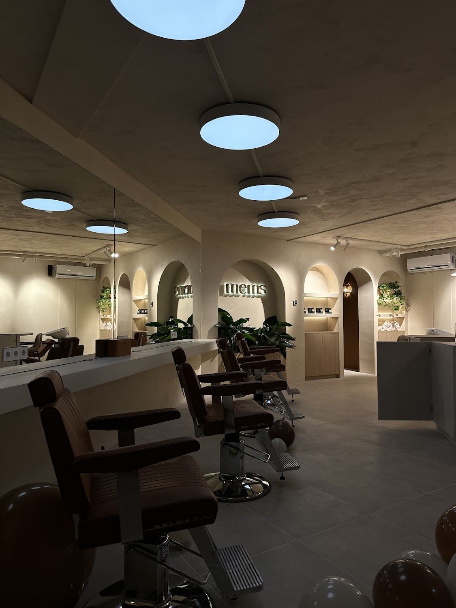
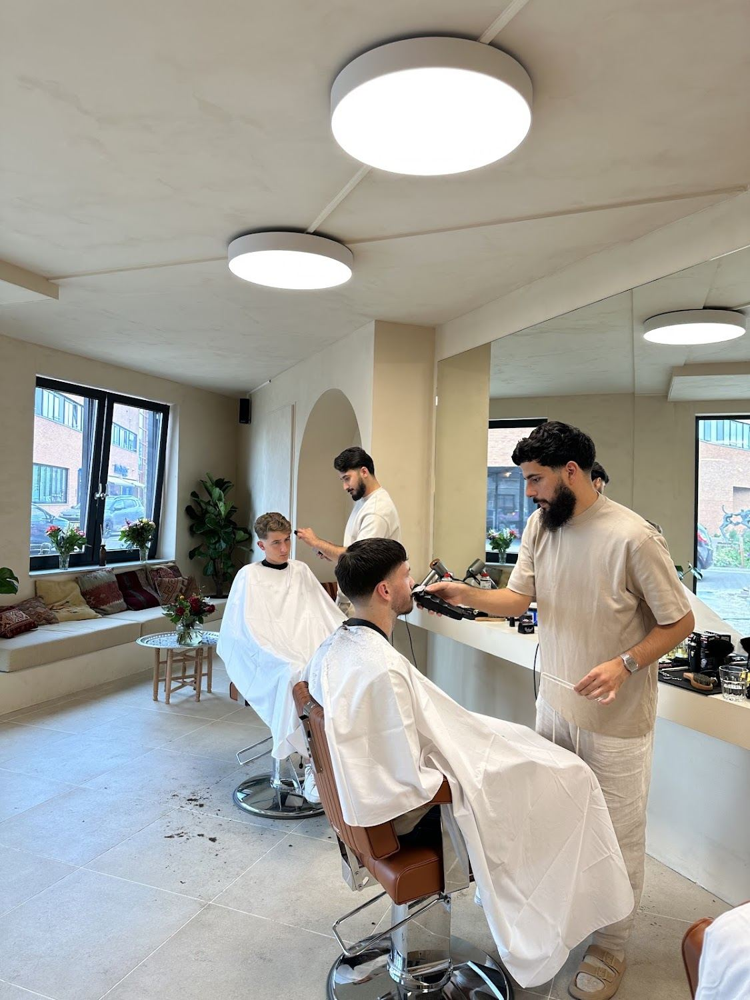
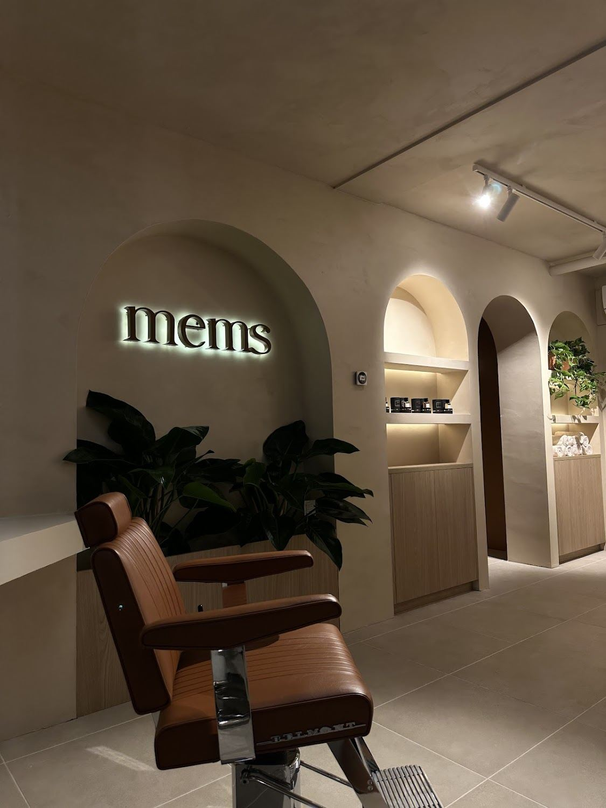

mems
Wilhelminastraat 44 · Didam
Mensen rijden er anderhalf uur voor.
0beoordelingen
0gemiddeld cijfer
0kappers
0knippen vanaf


Ik heb anderhalf uur mogen rijden. Absoluut de moeite waard.Dogukan Top · Google
Wat het kost
Met de tijd die ervoor staat
Knippen 30 tot 45 min
vanaf€ 20
Het volledig in model brengen van je haar, bovenop en aan de zijkanten.
Knippen en korte baard 30 tot 45 min
vanaf€ 22,50
Je haar en je korte baard volledig in model.
Knippen en lange baard 45 tot 60 min
vanaf€ 25
Je haar en je lange baard volledig in model.
Baard 15 min
vanaf€ 12,50
Alleen het scheren en contouren van je baard, dus niet je haar.
Baard plus 15 min
vanaf€ 15
Je baard in model, plus je hoofd kaal scheren of je contouren bijwerken.
Knippen tot 16 jaar 30 tot 45 min
vanaf€ 18
Knippen tot 6 jaar 15 min
€ 20
Knippen 65 plus 15 tot 30 min
€ 20
Je kiest zelf wie je knipt
Bij het reserveren kies je bij wie je in de stoel wilt. Ben je eenmaal gewend aan iemand, dan hoef je nooit meer uit te leggen hoe je het hebben wilt.
- Mehmed Akif
- Mehmet Celik
- Arda Oztas
- Dean Visscher
- Serhat Karadas
- Enes
Reserveer je stoel
Kies je behandeling, je kapper en een tijd die je schikt. Je boekt rechtstreeks in de agenda van de zaak.
Liever bellen? Dat kan op 06 40909311.
Openingstijden
- MaandagGesloten
- Dinsdag08:00 - 17:30
- Woensdag08:00 - 17:30
- Donderdag08:00 - 17:30
- Vrijdag08:00 - 19:00
- Zaterdag08:00 - 16:00
- ZondagGesloten